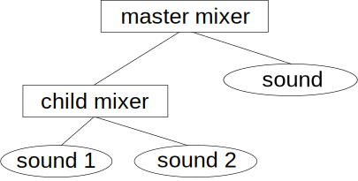
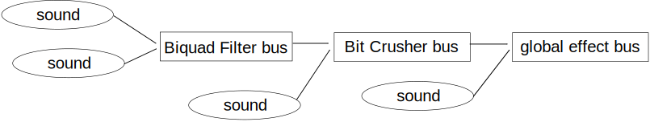

Introduction to Cricket Audio
The Cricket Audio interface
The basic Cricket Audio interface is C++, which means that cross-platform
native code can be written for iOS, tvOS, OSX, Android, Windows, and
Linux. However, each platform may also have alternative interfaces
available; there is a Java interface for Android and an Objective-C
interface for iOS/tvOS/OSX.
Android
On Android, you may use either the C++ interface or the Java
interface. If you are developing in Java with the SDK, you must use
the Java interface; if you are developing with the NDK, you must use the C++
interface. (Note that both interfaces are not designed to be used together
in the same app; if you initialize Cricket Audio from Java, you should not
use the C++ interface, and vice versa.)
The names of the classes and methods in the Java interface are mostly the
same as those in the C++ interface, except class names do not have the "Ck"
prefix. All classes are in the com.crickettechnology.audio
package.
Since Java cannot pass method parameters by reference, the Java interface
uses the FloatRef and IntRef
classes to emulate reference parameters. For example, this C++ code:
int loopStart, loopEnd;
sound->getLoop(loopStart, loopEnd);
corresponds to this code in Java:
IntRef loopStartRef = new IntRef();
IntRef loopEndRef = new IntRef();
sound.getLoop(loopStartRef, loopEndRef);
int loopStart = loopStartRef.get();
int loopEnd = loopEndRef.get();
iOS/tvOS/OSX
On iOS/tvOS/OSX, you may use either the C++ interface or the Objective-C
interface. If you use the C++ interface, source files that use the
Cricket Audio API should be either C++ files (.cpp)
or Objective-C++ files (.mm).
The names of the classes and methods in the Objective-C interface are mostly
the same as those in the C++ interface, except:
- Class names are prefixed with "Cko" instead of "Ck".
- For simple getter functions, the "get" prefix has been removed, to
follow Objective-C conventions; for example, [mixer
name] instead of [mixer getName].
- Where appropriate, properties have been defined for simple set/get
functions, so the property syntax can be used: for example, mixer.name
instead of [mixer name].
- To create an object, use one of the class factory methods (such
as newMixer, newStreamSound, newBank, etc), rather than calling alloc and init.
As you would expect following the "NARC" conventions, the returned
object has a retain count of 1.
The method names occasionally deviate from the Apple Objective-C naming
conventions to make it clearer to which functions in the C++ interface they
correspond.
Types of sounds
There are two types of sounds in Cricket Audio: stream
sounds and bank sounds.
Bank sounds are fully loaded into memory before they are played, while
stream sounds read their data from the device's file storage (or from the
network) as needed.
Bank sounds
Bank sounds are created from a bank description file, which is created
offline using the cktool
utility. Each bank can contain one or more sounds. The bank must
be loaded completely into memory before any sounds are created from
it. Once a bank is loaded, bank sounds can be played instantly
(unlike stream sounds, which must read data from storage before they can be
played). Typically, bank sounds are used for short sound effects.
Bank sounds can be stored in several data formats:
- 16-bit PCM: This is the default format. The data is
uncompressed, so it requires very few CPU cycles to play, but uses 2
bytes per sample per channel (about the same as a typical uncompressed
.wav or .aiff file).
- 8-bit PCM: Also uncompressed, but only uses 1 byte per sample per
channel (half the space of 16-bit PCM), and lower audio quality.
- ADPCM: A compressed format that requires somewhat more CPU cycles to
play, but requires 1/3 of the space of 16-bit PCM. Audio quality
is typically somewhat worse than 16-bit PCM but better than 8-bit
PCM. Samples are packed in blocks of 36 samples (24 bytes).
The format for each sound is specified in the bank description file.
Deciding which format to use for a particular sound requires making a
tradeoff between CPU load, memory, and sound quality. (We recommend
that you start with 16-bit PCM, and then switch some or all of your sounds
to one of the other formats if necessary to reduce the size of your banks,
paying attention to the changes in sound quality.)
More information on how to create banks using cktool, and how to create a
bank description file, is in the cktool section.
Stream sounds
Stream sounds are typically used for long sounds that are too large to fit
in memory, such as music or ambient sounds; rather than having the entire
sound in memory, the audio data is read from storage or the network as
needed. While this can use less memory than placing a large sound in a
bank, it does require file and network resources, and the sound is not ready
immediately after it is created.
The most portable formats for a stream sound are:
These formats are supported on all platforms, including Windows and OS X,
and we recommend that you use them for most purposes.
Files in the .cks format are created using cktool;
the audio data can be in the same formats supported by bank sounds (16-bit
PCM, 8-bit PCM, or ADPCM).
Streams can also be in other audio file formats; support for these varies by
platform. Currently, the following additional formats are supported on
both iOS and Android:
- .wav (uncompressed, or with µ-law or a-law compression)
- .mp3
- .mp4 (AAC compression)
- .m4a (AAC compression)
The iOS version can read the following additional audio file formats:
- .aac, .adts (AAC compression)
- .aiff, .aif, .aifc
- .caf
- .m4a (Apple Lossless compression)
- .snd, .au (uncompressed, or µ-law compression)
- .sd2
The Android version can read the following additional audio file formats:
Android devices may be able to read additional audio file formats, such as
FLAC, depending on the particular device and the version of Android on it.
You may need to purchase a license from Technicolor to play .mp3 content in
your app; see the mp3licensing.com
website for more information.
Be aware that some of these formats (such as .mp3, .ogg, and .m4a) require
significant CPU cycles to decode. The target device may have hardware
acceleration for decoding of some formats, but typically this can only be
used on one stream at a time; see the corresponding FAQ
entry.
Initializing
Before making any other calls to the Cricket Audio library, you must
initialize it.
C++: #include <ck/ck.h>
#include <ck/config.h>
// ...
// then, in your initialization code:
#if CK_PLATFORM_ANDROID
CkConfig config(env, activity);
#else
CkConfig config;
#endif
CkInit(&config);
Java: import com.crickettechnology.audio.*;
// then, in your initialization code:
Config config = new Config();
Ck.init(this, config);
Objective-C: #import "ck/objc/ck.h"
#import "ck/objc/config.h"
// then, in your initialization code:
CkConfig config;
CkConfigInit(&config); // set to defaults
CkInit(&config);
The CkConfig class contains some
initialization options; for example, you can specify a custom memory
allocator. They can be left at their defaults or set according to your
needs.
In the C++ code, note that on Android you must pass a JNIEnv
pointer and a jobject reference to your
activity. If you are initializing Cricket Audio from a JNI function
call from a Java activity, the JNIEnv*
and jobject are passed as the first and
second arguments to your native JNI function. If you are initializing
Cricket Audio from a native activity, they can be found in the env
and clazz members of the ANativeActivity
struct.
Updating
Once per frame, you should update Cricket Audio:
C++: CkUpdate();
Java: Ck.update();
Objective-C: CkUpdate();
(If you are not using a frame-based rendering API like OpenGL, then just
make sure you update Cricket Audio from the main thread every 30 ms or so.)
Playing bank sounds
First, load your bank; then create your sound from the bank, and play it.
C++: CkBank* bank = CkBank::newBank("my_bank.ckb");
CkSound* sound = CkSound::newBankSound(bank, "my_sound");
sound->play();
Java: Bank bank = Bank.newBank("my_bank.ckb");
Sound sound = Sound.newBankSound(bank, "my_sound");
sound.play();
Objective-C: CkoBank* bank = [CkoBank newBank:@"my_bank.ckb"];
CkoSound* sound = [CkoSound newBankSound:bank name:"my_sound"];
[sound play];
By default, paths refer to an asset embedded in your .apk (that is, one that
was put in the assets folder of your project) on Android; on iOS, paths are
relative to the Resources directory of your application. On either
platform, if you want to load a file from somewhere else (for example, on
external storage), you can pass in a CkPathType
value that indicates how the path is to be interpreted. For example,
to load a bank using a full path to a file on the file system:
C++: CkBank* bank = CkBank::newBank("/full/path/to/the/bank.ckb",
kCkPathType_FileSystem);
Java:
Bank bank = Bank.newBank("/full/path/to/the/bank.ckb",
PathType.FileSystem);
Objective-C: CkoBank* bank = [CkoBank
newBank:@"/full/path/to/the/bank.ckb" pathType:kCkPathType_FileSystem];
Banks can also be loaded asynchronously using the newBankAsync()
function. This will return immediately, and the bank will load in a
separate thread. You should wait until isLoaded()
returns true before calling any other functions on the bank.
If the bank cannot be loaded, the returned CkBank*
pointer will be null, or isFailed() will
return true. If the sound cannot be created, the returned CkSound
pointer will be null.
When you are finished with your sound, destroy the sound; when you are
finished with a bank, destroy the bank.
C++: sound->destroy();
bank->destroy();
Java: sound.destroy();
bank.destroy();
Objective-C: [sound release];
[bank release];
Do not call any functions on the sound or bank after destroying them.
In Java, the destroy() function releases
the native resources used by the object. If you do not call destroy(), the native resources will be released
when the object is garbage collected by the JVM. However, it is much
better to call destroy() and release them
explicitly, so you know exactly when it will happen.
In Objective-C, rather than destroying the object explicitly, send the release message; the object will be destroyed when
the reference count reaches 0.
Playing stream sounds
First, create your sounds:
C++: CkSound* sound = CkSound::newStreamSound("my_stream.mp3");
Java: Sound sound = Sound.newStreamSound("my_stream.mp3");
Objective-C: CkoSound* sound = [CkoSound
newStreamSound:@"my_stream.mp3];
Unlike a bank sound, a stream sound may not be ready to play immediately, as
it has to load the initial buffers of audio from a file or from the
network. If you call play()
before isReady() returns true, there will
be a slight delay before the sound actually starts playing.
When you are finished with the sound, call destroy()
(or release, in Objective-C).
Using mixers
All sounds are part of a mixer hierarchy, which has a tree structure.
By default, there is one master mixer, and all sounds are children of that
master mixer. So, to lower the volume on one sound, call setVolume()
on that sound; but if you want to lower the volume on all sounds at once,
call setVolume() on the master mixer:
C++: CkMixer* master = CkMixer::getMaster();
master->setVolume(0.1f);
Java: Mixer master = Mixer.getMaster();
master.setVolume(0.1f);
Objective-C: CkoMixer* master = CkoMixer.master;
master.volume = 0.1f;
To create another mixer, call Mixer::newMixer().
By
default, the new mixer is a child of the master mixer; to set its parent to
a different mixer, call setParent().
By default, newly created sounds are assigned to the master mixer. To
assign a sound to a different mixer, call Sound::setMixer().
When calculating the final mixed volume for a sound, the sound's volume is
multiplied by the volume of its mixer and of all its mixer's parents.
For example, this diagram shows sounds 1 and 2 assigned to a mixer that is
parented to the master mixer, and sound 3 assigned to the master mixer
itself. If the master mixer volume is 0.8, the child mixer volume is 0.5,
and the sound volumes are all 0.9, then sounds 1 and 2 will have final mixed
volumes of 0.8 * 0.5 * 0.9 = 0.36, and sound 3 will have a final mix volume
of 0.9 * 0.8 = 0.72. By adjusting the volume of the child mixer, you
can adjust the volumes of sounds 1 and 2 simultaneously; by adjusting the
volume of the master mixer, you can adjust the volumes of all the sounds.

For example, in a game, when a character says a line of dialog, you may want
the volume of other sounds to decrease, so the dialog is more clearly
audible. To do this, parent all dialog sounds to one mixer, and parent
all other game sounds to another mixer. To duck the volume of the game
sounds, just call setVolume() on their
parent mixer.
Mixers can also be paused. Pausing a mixer pauses all its sounds and
all sounds of descendant mixers. The actual pause state of a sound is
the logical OR of the pause state of the sound, its mixer, and any ancestor
mixers.
Pausing mixers can be useful to pause in-game sound effects separately from
other sound effects. For example, in the diagram above, assume that
sound 1 and sound 2 are in-game sound effects, but sound 3 is a sound effect
for a button press. When the user pauses the game, you can pause the
child mixer, and the in-game sound effects will be paused, but the button
press sound will not be paused, so it can be played if the user presses some
buttons on the pause screen. When the user unpauses the game, you just
need to unpause the child mixer.
Effects
You can also apply real-time audio effects, which can be adjusted
dynamically. For example, when a character in a game goes underwater,
you can apply a low-pass filter to some of the sounds to make them sound
muffled.
To apply effects to your audio, you create one or more effects and add them
to an effect bus, and then direct a sound's output to that bus:
C++: CkEffect* effect =
CkEffect::newEffect(kCkEffectType_BitCrusher);
CkEffectBus* bus = CkEffectBus::newEffectBus();
bus->addEffect(effect)
sound->setEffectBus(bus);
Java: Effect effect = Effect.newEffect(EffectType.BitCrusher);
EffectBus bus = EffectBus.newEffectBus();
bus.addEffect(effect)
sound.setEffectBus(bus);
Objective-C: CkoEffect* effect = [CkoEffect
newEffect:kCkEffectType_BitCrusher];
CkoEffectBus* bus = [CkoEffectBus newEffectBus];
[bus addEffect:effect];
sound.effectBus = bus;
Effects will typically have several parameters, which can be adjusted while
the effects are in use:
C++: effect->setParam(kCkBitCrusherParam_HoldMs, 1.2f);
Java: effect.setParam(BitCrusherParam.HOLD_MS, 1.2f);
Objective-C: [effect setParam:kCkBitCrusherParam_HoldMs value:1.2f];
The output of one or more effect buses can be directed to another effect bus
using CkEffectBus::setOutputBus(). So,
for example, all game dialog sounds could be directed to one effect bus with
a Biquad Filter effect, and then the output of that bus could be mixed with
all the gunshot sounds and directed to another bus with a Bit Crusher
effect:

In this diagram, the dialog sounds on the far left will have both the Biquad
Filter and the Bit Crusher effects applied to them; the sound in the middle
will have only the Bit Crusher effect applied; and the sound on the right
which feeds into the global effect bus will have no effects.
You can access that global effect bus, through which all audio is directed
before output, with CkEffectBus::getGlobalEffectBus();
any effects added there will be applied to all sounds.
You can also (in C++ only) create custom audio effects. Define a class
derived from CkEffectProcessor, and register
a factory function that creates an instance of it with CkEffect::registerCustomEffect;
then use CkEffect::newCustomEffect() to
create the new effect. For an example, see the "stutter" effect in the
DspTouch example.
Suspending and resuming
When your app becomes inactive, suspend Cricket Audio. This pauses
playback of all sounds and suspends the audio thread.
C++: CkSuspend();
Java: Ck.suspend();
Objective-C: CkSuspend();
When you app becomes active again, resume Cricket Audio:
C++: CkResume();
Java: Ck.resume();
Objective-C: CkResume();
Shutting down
To shut down Cricket Audio:
C++: CkShutdown();
Java: Ck.shutdown();
Objective-C: CkShutdown();
Threading issues
All calls to the Cricket Audio API should be made from the same
thread.
If you have provided a custom log function or custom memory
allocation/deallocation functions in CkConfig,
calls to those functions will be made from multiple threads, so they should
be written to be thread-safe.